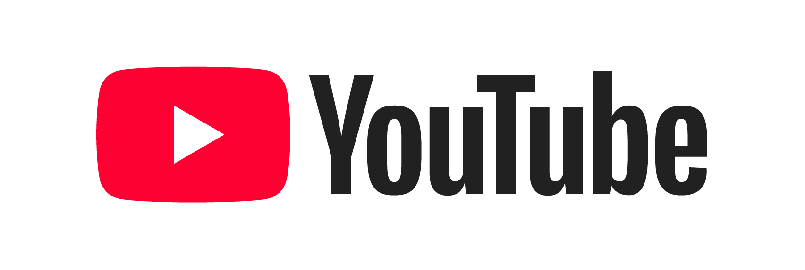

WastedClipsTV publishes short vertical clips of gaming live streams, with subtitles and credit to the original streamer.
ClipBot is the private tool used by WastedClipsTV to prepare these clips and upload them to its own YouTube channel through the YouTube Data API.

Watch WastedClipsTV on YouTube